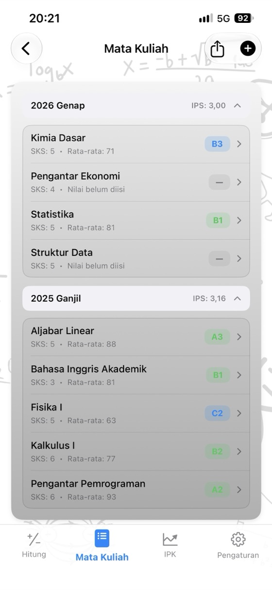
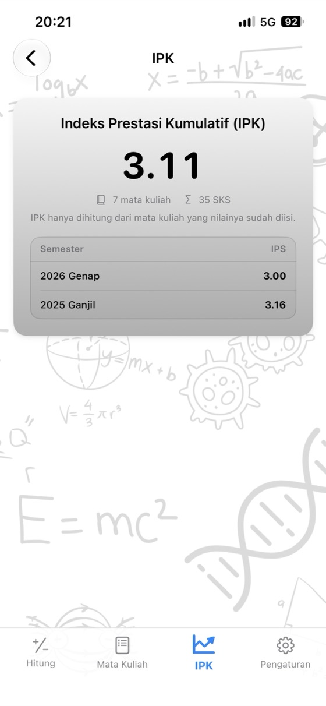
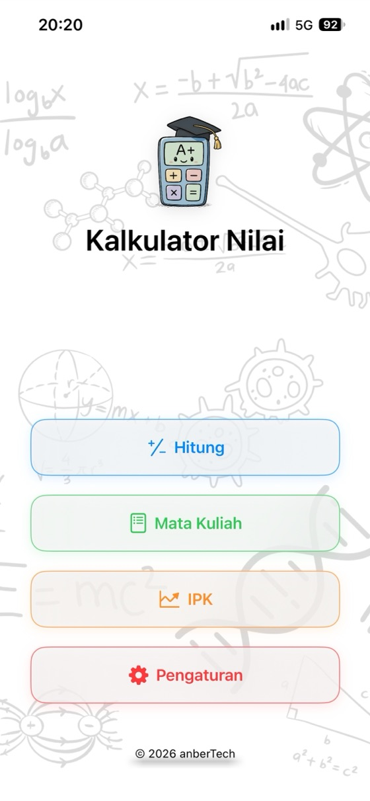
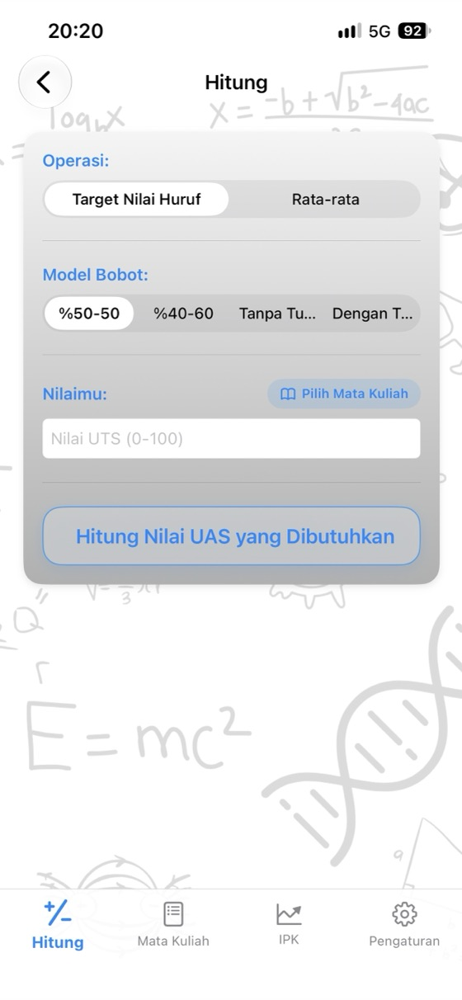
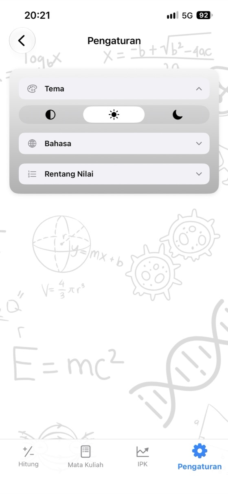

Ketahui nilaimu,
rencanakan masa depanmu.
Rata-rata mata kuliah, nilai UAS yang dibutuhkan, dan IPK dalam satu aplikasi. Tanpa iklan, tanpa akun, sepenuhnya offline.
- ✓ Gratis
- ✓ Tanpa iklan
- ✓ Tanpa akun
- ✓ Offline


Hitung sekarang
Coba langsung di sini sebelum mengunduh aplikasinya. Ubah nilainya dan hasilnya akan langsung diperbarui.
Bobot UAS: 60%
Bobot UAS: 60%
Kalkulator gratis
Gunakan langsung di browser tanpa mengunduh apa pun. Tanpa daftar akun, dan nilai yang kamu masukkan tidak pernah dikirim keluar dari perangkatmu.
Mengapa Kalkulator Nilai?
Rata-rata mata kuliah
Masukkan nilai UTS, UAS, dan tugas beserta bobotnya untuk melihat nilai rata-rata dan nilai huruf secara instan.
UAS yang Dibutuhkan
Lihat skor minimum UAS yang diperlukan untuk setiap nilai huruf dalam satu layar.
Pemantauan IPK
Simpan mata kuliahmu per semester; IPS dan IPK kamu akan dihitung otomatis.
Skala penilaian sendiri
Sesuaikan rentang nilai huruf dan bobot angka agar sama persis dengan aturan kampusmu.
Transkrip PDF
Bagikan daftar mata kuliah dan nilai rata-rata kamu sebagai file PDF dengan satu ketukan.
17 bahasa
Bahasa Inggris, Spanyol, Jerman, Jepang, Arab, Turki, Indonesia, dan lainnya.
Privasi utama
Tanpa akun, tanpa iklan, tanpa pelacakan. Semua datamu tersimpan aman di perangkatmu.
Bisa diakses offline
Tidak butuh internet: saat minggu ujian, di perpustakaan, atau di mana saja.
Tampilan aplikasi



Pertanyaan yang sering diajukan
Bagaimana cara menghitung nilai rata-rata mata kuliah?
Kalikan setiap nilai dengan bobot persentasenya lalu jumlahkan. Dengan bobot UTS 40% dan UAS 60%: rata-rata = UTS × 0,40 + UAS × 0,60. Nilai UTS 62 dan UAS 75 menghasilkan 62 × 0,40 + 75 × 0,60 = 69,8. Jika ada nilai tugas, tambahkan juga nilai tertimbangnya; total seluruh bobot harus 100%.
Berapa nilai UAS yang dibutuhkan agar lulus?
UAS yang dibutuhkan = (target rata-rata − UTS × bobot UTS) ÷ bobot UAS. Dengan nilai UTS 55 berbobot 40% dan batas rata-rata kelulusan 50: (50 − 22) ÷ 0,60 = 46,7, jadi kamu butuh setidaknya 47 di UAS. Kalkulator Nilai menghitung ini untuk semua nilai huruf sekaligus.
Bagaimana cara menghitung IPK?
Kalikan bobot angka setiap mata kuliah (A = 4,0, B = 3,0 …) dengan jumlah SKS-nya, jumlahkan semuanya, lalu bagi dengan total SKS. Hasilnya adalah Indeks Prestasi Kumulatif (IPK) pada skala 4,0.
Apakah rentang nilai huruf sama di setiap kampus?
Tidak. Rentang nilai dan bobot angka berbeda-beda antar negara, universitas, dan bahkan mata kuliah. Di aplikasi, kamu bisa mengubah skala penilaian agar sesuai dengan aturan kampusmu.
Apa itu nilai minimum UAS?
Beberapa kampus menetapkan batas nilai minimum pada ujian akhir (misalnya 30, 45, atau 50) agar bisa lulus, meskipun nilai rata-rata akhir kamu sudah mencukupi. Masukkan batas minimum tersebut agar perhitungan nilai UAS yang dibutuhkan ikut memperhitungkannya.
Apakah Kalkulator Nilai gratis?
Ya. Aplikasi ini gratis di App Store tanpa iklan, tanpa langganan, dan tanpa pembelian dalam aplikasi. Semua kalkulator di situs web ini juga sepenuhnya gratis.
Di mana data nilai saya disimpan?
Hanya di perangkatmu sendiri. Kamu tidak perlu membuat akun dan tidak ada data yang dikirim ke server. Nilai yang kamu ketik di kalkulator web tidak pernah meninggalkan browser kamu.
Apakah ada versi Android?
Versi Android akan segera hadir di Google Play. Saat ini aplikasi tersedia untuk iPhone dan iPad (iOS 17.6 atau versi lebih baru) di App Store.
Pantau semua mata kuliahmu di satu tempat
Gratis. Tanpa iklan. Tanpa akun.